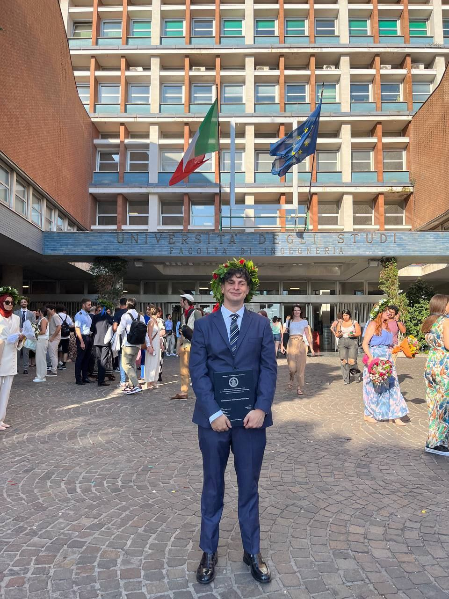

PhD Student in Artificial Intelligence
University of Naples Federico II
Strategic Reasoning · Knowledge Representation · NeuroSymbolic AI · Explainable Artificial Intelligence · Time Series Analysis · Model Checking and Formal Verification
I am a PhD student in Artificial Intelligence at the University of Naples Federico II, conducting my research within the ASTREA (Automated STRategic REAsoning) group, DIST (Department of Science and Technology) department at University of Naples Parthenope and the (INGV) National Institute of Geophysics and Volcanology Research Institute.
My work aims to develop principled methods at the intersection of NeuroSymbolic AI, Knowledge Representation and Reasoning, and Explainable Artificial Intelligence. I focus on integrating symbolic models with data-driven approaches to support transparent reasoning, verifiable decision-making, and interpretable AI systems.
Loading publications…
Loading conferences…
Loading projects…
Loading experiences…